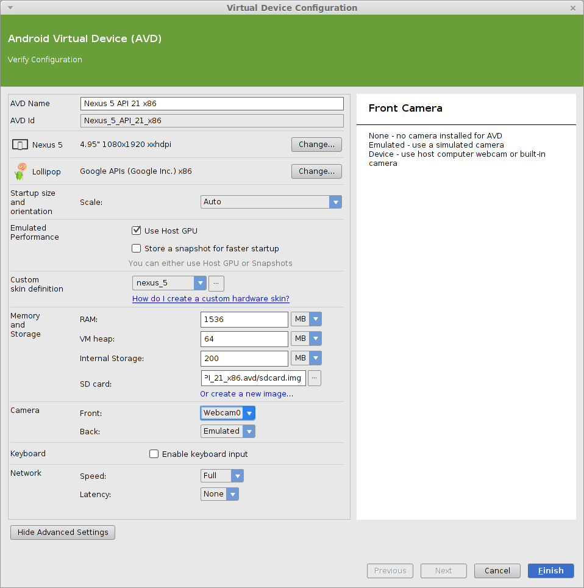

Requesting camera permission

- You must declare that your app uses the camera in your app's AndroidManifest.xml file.
<manifest ...>
<!-- permissions needed for the camera -->
<uses-permission
android:name="android.permission.CAMERA" />
<uses-feature
android:name="android.hardware.camera"
android:required="true" />
<uses-permission android:name="android.permission.MANAGE_DOCUMENTS" />
<uses-permission android:name="android.permission.WRITE_EXTERNAL_STORAGE" />
...
</manifest>
// in activity code
requestPermission("android.permission.CAMERA");
AVD and camera

- It is difficult to emulate a camera in the Android Virtual Device.
- In AVD Manager, you can try setting the device to use your laptop's webcam as the virtual camera, but it may crash.
- AVD Manager → Edit → Advanced Settings → Camera
- Alternatively, just deploy your app to a physical device to test camera functionality.
Camera code example
- Example that takes a picture and places it into an
ImageView:
private static final int REQ_CODE_TAKE_PICTURE = 30210; // 1-65535
...
Intent picIntent = new Intent(MediaStore.ACTION_IMAGE_CAPTURE);
startActivityForResult(picIntent, REQ_CODE_TAKE_PICTURE);
...
@Override
protected void onActivityResult(int requestCode, int resultCode,
Intent intent) {
if (requestCode == REQ_CODE_TAKE_PICTURE
&& resultCode == RESULT_OK) {
Bitmap bmp = (Bitmap) intent.getExtras().get("data");
ImageView img = (ImageView) findViewById(R.id.camera_image);
img.setImageBitmap(bmp);
}
}
Camera code example 2
- Example that takes a picture and saves it to the Pictures folder:
private static final int REQ_CODE_TAKE_PICTURE = 30210;
...
Intent picIntent = new Intent(MediaStore.ACTION_IMAGE_CAPTURE);
// create the file to save the image into
File photosDir = Environment.getExternalStoragePublicDirectory(
Environment.DIRECTORY_PICTURES);
if (!photosDir.exists()) { photosDir.mkdirs(); }
File photoFile = new File(photosDir, "myPhoto.jpg");
picIntent.putExtra(MediaStore.EXTRA_OUTPUT,
Uri.fromFile(photoFile));
startActivityForResult(picIntent, REQ_CODE_TAKE_PICTURE);
...
// (onActivityResult not needed)
Check if camera is present
- Not every device has a camera.
- Your app may want to check whether camera is present or not.
- Put a method like this in your activity:
// Returns true if the current device has a camera.
public boolean hasCamera() {
return getPackageManager().hasSystemFeature(
PackageManager.FEATURE_CAMERA);
}
Photo gallery example
- Grab an existing photo from the built-in photo gallery activity:
private static final int REQ_CODE_PHOTO_GALLERY = 30211; // 1-65535
...
Intent picIntent = new Intent(Intent.ACTION_PICK,
MediaStore.Images.Media.EXTERNAL_CONTENT_URI);
startActivityForResult(picIntent, REQ_CODE_PHOTO_GALLERY);
...
@Override
protected void onActivityResult(int requestCode, int resultCode, Intent intent) {
if (requestCode == REQ_CODE_PHOTO_GALLERY && resultCode == RESULT_OK) {
Uri targetUri = intent.getData(); // location of photo file
try {
Bitmap bitmap = BitmapFactory.decodeStream(
getContentResolver().openInputStream(targetUri));
...
} catch (FileNotFoundException fnfe) {
Log.wtf("onActivityResult", fnfe);
}
}
}
The Camera class
(link)
- In our previous example, we used the built-in photo-taking activity using an
Intent.- This is simple but allows very little customization.
- For more precise camera control, look up the
Cameraclass:
Camera cam = Camera.open();
Camera.Parameters params = cam.getParameters();
params.setPreviewSize(width, height);
cam.setParameters(params);
cam.setDisplayOrientation(degrees);
cam.startPreview();
cam.takePicture(...); // pass "callbacks" to run later
cam.stopPreview();
cam.release();
Lib: SimpleCamera

| Method | Description |
|---|---|
takePhoto(); takePhoto("filename"); |
initiates taking a photo (if filename passed, saves it) |
photoGallery(); |
launches photo gallery activity |
cameraExists() |
returns true if device has a camera |
onPhotoReady(bitmap) |
override this to capture the photo after it is taken/chosen |
// make it easy to take a photo with the camera
SimpleCamera.with(this).takePhoto();
...
public void onPhotoReady(Bitmap bitmap) {
// write code here to process the photo
}